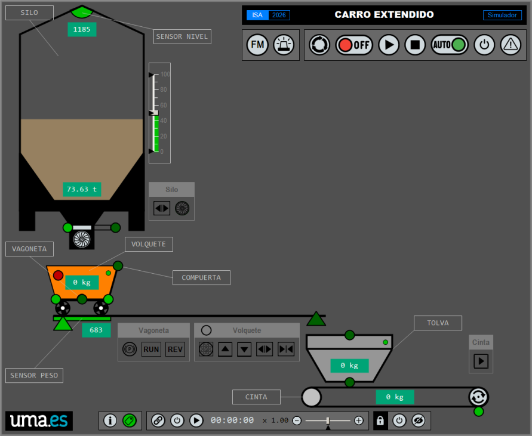
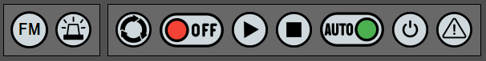
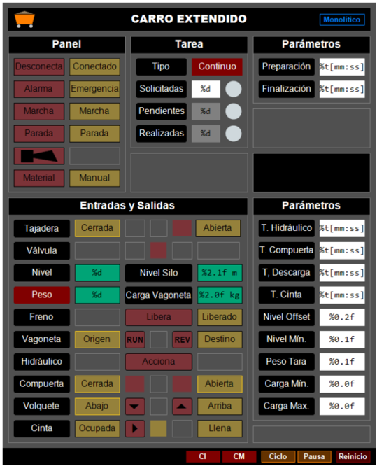
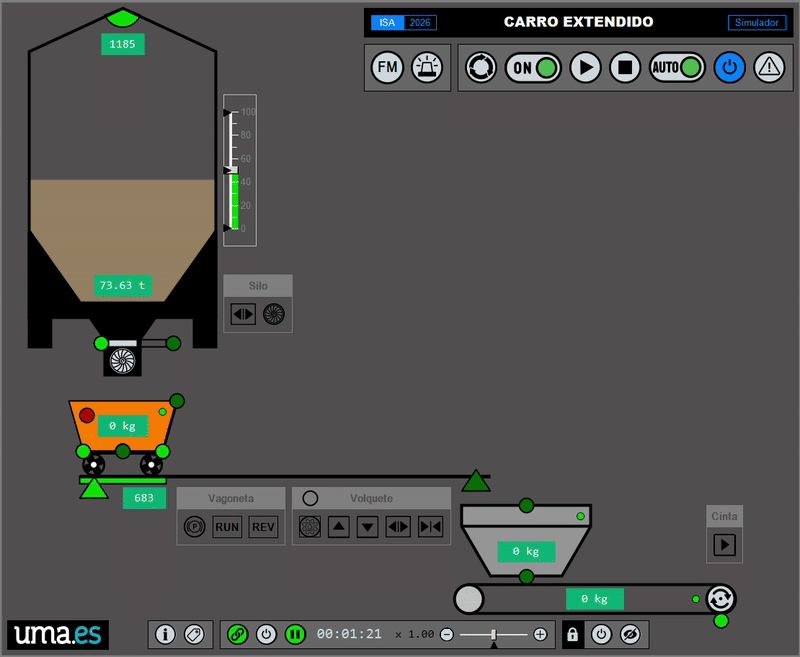

🚟 Carro Extendido (TwinCAT 3)¶
Importante
Esta documentación está aún en proceso de ser terminada y revisada.
📝 Descripción Funcional¶
El carro extendido pretende ser una modesta ampliación con fines docentes del famosísimo problema del carro va y viene.

El carro extendido es un sistema de transporte de material granulado entre los dos puntos extremos de una vía. Esta ampliación, de espíritu realista, pretende ser una propuesta equilibrada que, con fines didácticos, omite los detalles auxiliares de una instalación real, para centrarse en los elementos esenciales que permiten ilustrar claramente el potencial de los paradigmas de programación de la lógica de control monolítico, estructurado y funcional.

Elementos constituyentes¶
Parte operativa¶
La parte operativa del carro extendido está constituida por los siguientes dispositivos:
-
Un silo cilíndrico de 10 m de altura por 5 m de diámetro con capacidad para contener unos 1500 m3 de material. El silo consta de un sensor de nivel por ultrasonidos, una compuerta de tajadera (válvula de guillotina) de seguridad de accionamiento neumático y una válvula rotativa (alimentador) de accionamiento eléctrico, para la dosificación precisa del material expendido.
-
Una vagoneta con volquete (carro) que se desplaza por unas vías transportando el material entre el punto origen situado bajo la tolva, hasta el punto destino situado sobre un sistema de evacuación separado unos 100 m. La vagoneta es impulsada por un motor de corriente alterna accionado por un variador de frecuencia, para controlar su movimiento hacia adelante y hacia atrás. La vagoneta dispone de un freno eléctrico de seguridad para impedir movimientos accidentales. En el punto origen, bajo el boquerel de descarga del silo, se sitúa una báscula de pesaje, que permite conocer la cantidad de material cargada en la caja de la vagoneta. La vagoneta dispone de un volquete dotado de compuerta, ambos accionados hidráulicamente, para la descarga del material transportado.
-
Un sistema de evacuación que conduce el material hacia su destino final. Este sistema consta de una tolva de recepción, sobre la que la vagoneta vierte el material, y una cinta transportadora accionada por un motor de corriente alterna de arranque directo que dirige el material hasta su destino final. El rodillo de retorno incorpora un detector de rotación (sensor inductivo y pletina) para verificar el movimiento real de la banda y prevenir daños por deslizamiento o rotura.
Parte de relación¶
La parte de relación consiste en un panel de operador básico compuesto por:

- Una lámpara de material, para indicar la falta de material en el silo.
- Un avisador acústico, para reclamar la atención de los operarios.
- Una seta de emergencia, para desactivar el circuito de seguridad.
- Un selector de encendido (0/I), para encender el sistema de transporte.
- Un pulsador de marcha con piloto de señalización (lámpara de marcha), para iniciar el sistema y señalizar su estado de funcionamiento.
- Un pulsador de parada para solicitar la parada a final del ciclo.
- Un selector de modo, para establecer el modo principal de funcionamiento (automático/manual).
- Un pulsador de conexión con piloto de señalización (lámpara de conexión), para activar (armar) el circuito de seguridad e indicar su estado de activación (armado).
- Una lámpara de alarma, para señalizar los avisos y fallos.
El sistema de control también dispone de una visualización (panel de operador virtual) que permite la completa explotación del sistema.

Descripción del proceso¶
Condición inicial¶
- Parte operativa energizada (armada).
- Silo por encima del nivel mínimo.
- Tajadera cerrada.
- Vagoneta en el punto origen (bajo el boquerel de descarga del silo).
- Volquete abajo y con la compuerta cerrada.
Secuencia normal de funcionamiento¶

- Se carga la vagoneta hasta un determinado peso mínimo accionando la válvula rotativa con la tajadera abierta.
- Una vez cargada, la vagoneta transporta el material hasta su punto destino al final de la vía.
- Se descarga, durante el tiempo necesario, la vagoneta sobre la tolva de la cinta transportadora, abriendo la compuerta y elevando el volquete.
- Se evacúa la tolva accionando la cinta transportadora durante el tiempo necesario.
- La vagoneta, ya descargada, regresa al punto de partida.
Notas
- Si en algún momento del funcionamiento, el nivel del silo desciende por debajo de su mínimo, la secuencia normal debe detenerse a la espera de que se reabastezca con el material necesario.
- Para permitir el desplazamiento de la vagoneta, es condición indispensable que el freno electromecánico se encuentre accionado (motor desbloqueado).
- El grupo hidráulico debe activarse previamente y debe mantenerse activo de forma ininterrumpida durante toda la operación de descarga de la vagoneta.
- Cuando la cinta está en movimiento debe activarse, cada cierto tiempo, el detector de rotación del rodillo de retorno.
Funcionalidades¶
Lógica de control¶
- Evaluación de las condiciones iniciales.
- Evaluación de las condiciones de marcha.
- Secuencia automática de restauración de las condiciones iniciales.
- Secuencias de funcionamiento normal.
- Tratamiento de la falta de material.
- Normalización y escalado de las señales de entrada analógicas.
- Modo manual (mandos directos) y automático.
- Modo de procesamiento continuo o por lotes (tarea).
- Modo ininterrumpido y modo ciclo a ciclo.
- Gestión de la tarea (maniobras solicitadas, pendientes y realizadas).
- Parametrización de todas las variables (tiempos y cantidades).
- Reinicio y pausa del estado.
Visualización¶
- Panel de operador.
- Monitorización y mando de todas las señales de entrada y salida.
- Gestión de la tarea (maniobras solicitadas, pendientes y realizadas).
- Gestión de los parámetros del sistema (tiempos, distancias y cantidades).
- Botón de verificación de los elementos de señalización.
- Botón de reinicio y pausa del estado.
- Indicador de las condiciones iniciales y de marcha.
Entradas y salidas (I/O)¶
Leyenda
E Entrada / S Salida
Nombre |
Tipo | Origen | Descripción |
|---|---|---|---|
SistemaConectado |
BOOL |
E | Parte operativa conectada |
PulsadorEmergencia |
BOOL |
E | Desconecta el circuito de seguridad |
PulsadorMarcha |
BOOL |
E | Solicita la puesta en marcha |
PulsadorParada |
BOOL |
E | Solicita la parada a final de ciclo |
SelectorManual |
BOOL |
E | Selecciona el modo automático/manual |
TajaderaAbierta |
BOOL |
E | Sensor magnético de posición, válvula de guillotina abierta |
TajaderaCerrada |
BOOL |
E | Sensor magnético de posición, válvula de guillotina cerrada |
SiloNivel |
INT |
E | Valor del sensor de nivel de ultrasonidos del silo |
BasculaPeso |
INT |
E | Valor del sensor de peso (báscula) de la vagoneta |
VagonetaDesbloqueda |
BOOL |
E | Microinterruptor, freno eléctrico de la vagoneta activado (liberado) |
VagonetaOrigen |
BOOL |
E | Sensor fotoeléctrico de barrera, vagoneta en el inicio del recorrido |
VagonetaDestino |
BOOL |
E | Sensor fotoeléctrico de barrera, vagoneta en el final del recorrido |
CompuertaAbierta |
BOOL |
E | Sensor magnético de posición, compuerta del volquete abierta |
CompuertaCerrada |
BOOL |
E | Sensor magnético de posición, compuerta del volquete cerrada |
VolqueteArriba |
BOOL |
E | Sensor magnético de posición, volquete arriba |
VolqueteAbajo |
BOOL |
E | Sensor magnético de posición, volquete abajo |
TolvaOcupada |
BOOL |
E | Sensor capacitivo, detecta la presencia de material en la tolva |
TolvaLlena |
BOOL |
E | Sensor capacitivo, detecta que la tolva está completamente llena |
CintaRotacion |
BOOL |
E | Sensor inductivo, detecta que el motor de la cinta está en movimiento (un pulso por vuelta) |
SistemaDesconecta |
BOOL |
S | Desconecta el circuito de seguridad |
AvisadorSonoro |
BOOL |
S | Peligro, fin de tarea o la necesidad de intervención del operario |
LamparaAlarma |
BOOL |
S | Indica avisos o fallos |
LamparaMarcha |
BOOL |
S | Indica el estado de funcionamiento de la tarea |
LamparaMaterial |
BOOL |
S | Indica el nivel bajo de material en el silo |
TajaderaAbre |
BOOL |
S | Abre la válvula de guillotina de seguridad |
ValvulaAcciona |
BOOL |
S | Marcha/para la válvula rotativa de alimentación |
VagonetaDesbloquea |
BOOL |
S | Activa freno eléctrico de la vagoneta (libera) |
VagonetaMarcha |
BOOL |
S | Marcha/para el motor de la vagoneta (hacia adelante) |
VagonetaInvierte |
BOOL |
S | Invierte el sentido del motor de la vagoneta (hacia atrás) |
Hidraulico |
BOOL |
S | Marcha/para el motor del grupo hidráulico del volquete |
CompuertaAbre |
BOOL |
S | Abre la compuerta del volquete |
CompuertaCierra |
BOOL |
S | Cierra la compuerta del volquete |
VolqueteSube |
BOOL |
S | Sube la caja del volquete |
VolqueteBaja |
BOOL |
S | Baja la caja del volquete |
CintaMarcha |
BOOL |
S | Marcha/para el motor de la cinta transportadora |
Especificación funcional¶
Las siguientes especificaciones funcionales describen el comportamiento del carro extendido (lógica de control) de una manera precisa utilizando lenguaje GRAFCET.
- 🧱 Monolítico (PDF) Próximamente!
- 🗂️ Estructurado (PDF) Próximamente!
- 🧩 Funcional (PDF) Próximamente!
Implementación¶
Implementa el funcionamiento del sistema de transporte de material que representa el carro extendido utilizando tres paradigmas de programación (monolítico, estructurado y funcional) para ilustrar, con fines didácticos, las posibilidades y el alcance que cada uno de ellos.
- 🧱 Monolítico (orientada al sistema). Implementación directa. Toda la secuencia de control se encuentra recogida en un único elemento de programación.
- 🗂️ Estructurado (orientado a la tarea). La secuencia de funcionamiento se organiza y distribuye en sub-secuencias denominadas tareas (acciones complejas).
- 🧩 Funcional (orientado a la unidad funcional). La lógica de control del sistema se organiza en términos de unidades funcionales, entidades formadas por un subconjunto de dispositivos (sensores y actuadores), capaces de llevar a cabo una o más tareas. Próximamente!
💻 Requisitos del Sistema¶
Software¶
- IDE: Microsoft Visual Studio / TwinCAT 3 XAE (Versión mínima recomendada: 3.1.4024.x).
- Lenguajes: Texto Estructurado (
ST) y Diagrama de Funciones Secuenciales (SFC).
🚀 Descargar el ejemplo¶
Para descargar, compilar y ejecutar este proyecto en el entorno de TwinCAT 3, seguir el siguiente procedimiento.
Mediante el Campus Virtual¶
-
Copiar a tu equipo local el fichero
🧱 Monolítico
CV → Automatización → ejemplos → 3_tc3_carro_monolitico → tc3_carro_extendido_monolitico_lite.tnzip🗂️ Estructurado
CV → Automatización → ejemplos → 4_tc3_carro_estructurado → tc3_carro_extendido_estructurado_lite.tnzip🧩 Funcional
Próximamente!
que hay en la carpeta del campus virtual.
-
Seguir el procedimiento descrito aquí para generar la Solución a partir del fichero.
🔨 Explicación del ejemplo¶
🧱 Monolítico ➡️
🗂️ Estructurado ➡️
🧩 Funcional Próximamente!
🤝 Contribuciones¶
Este proyecto es utilizado con fines educativos. Las contribuciones, sugerencias o correcciones de errores son bienvenidas. Por favor, abra un Issue o envíe un Pull Request si desea contribuir.
🧑 Autor¶
- Autor Principal: Víctor Torres (@vetorres-uma)
- Revisor: Francisco Ángel Moreno (@famoreno)
🎖️ Créditos y Atribuciones¶
- Iconografía: Los iconos de los botones de la interfaz HMI se han obtenido de Flaticon.
⚖️ Licencia¶
Este proyecto es de código abierto y está disponible bajo la Licencia Pública General GNU (GPL).
- Consulte el archivo
LICENSE.mdpara más detalles.